Don't tell us what you've done.
Show us what you built.
Antry is a community platform where developers prove their skills through shipped projects — not resumes, not credentials, not job titles. This page walks through the thinking, the product, and the roadmap.
Hiring rewards credentials. Building rewards output. Antry rewards the latter.
LinkedIn was built for credentials. GitHub is for code storage. Devpost is hackathon-only. Product Hunt is for launches. None of them were designed for the demo-first era of AI-native builders — where the work is the resume.
"The gap between a polished pre-launch site and a serious product isn't more features — it's inbound infrastructure, a killer hook, and seeded content."
"Paste a GitHub username. In five seconds a draft builder profile appears — shipped projects, tech stack, one-line summary. One-click claim."
"The Receipt: a verifiable, embeddable proof-of-build artifact. Sponsors see real output. Builders own their work."
"AI tooling collapsed the cost of shipping. The next generation of builders has portfolios but no place to show them — yet."
Each layer feeds the next. Showcase brings the people. Community proves the talent. Studio compounds the value.
A flywheel, not a feature list. Builders join for visibility, stay for hackathons, and the best of them get the studio.
Builder profiles
Live demos, source links, tech stack, build time. A portfolio that actually shows what you can do — auto-imported from GitHub on day one.
Hackathons & briefs
Themed events with real prizes and sponsor visibility. Anthropic, AWS, OpenAI-style partners get access to ranked, evidence-backed talent.
Venture studio
The best projects from the community get resources, mentorship, and capital to become real products. Studio powered by community signal.
Fifteen screenshots from the build, captured against the live dev environment.
Editorial landing, sponsor-tinted briefs, candidate dashboards, a chat-and-code lab that runs sandboxed tests, and a JSON API. Captured 1280×900 at 1.5× DPR.
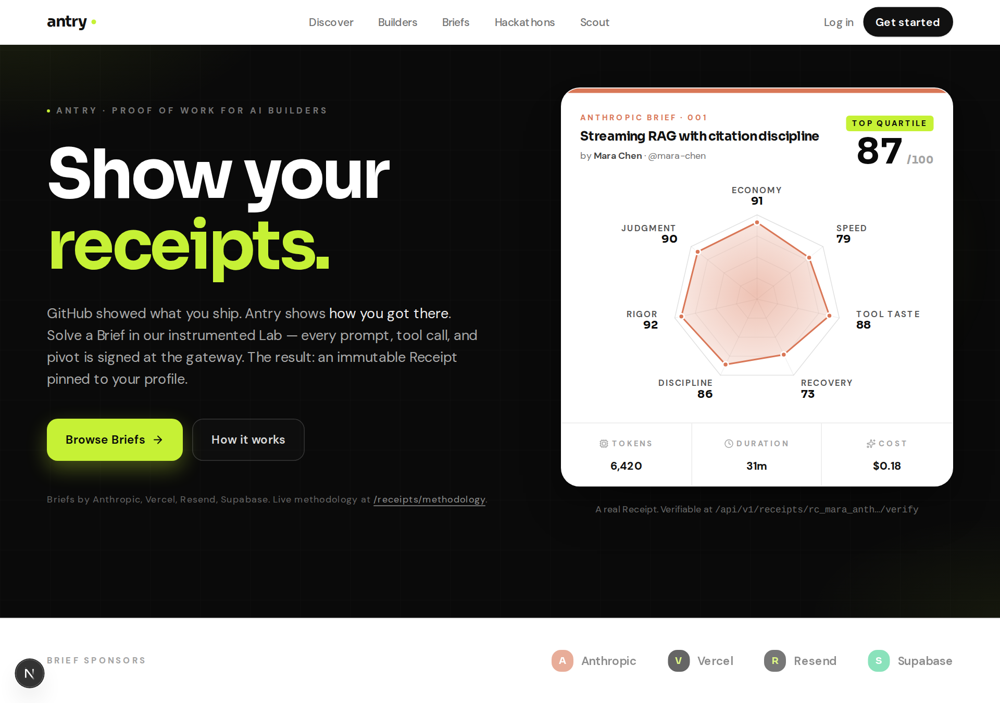
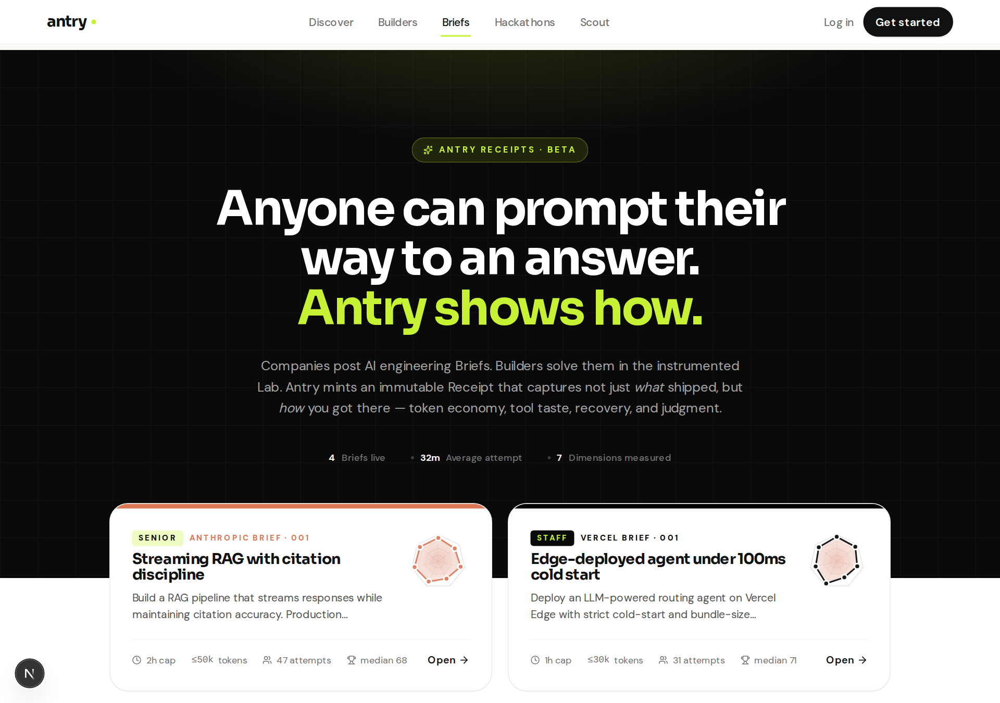
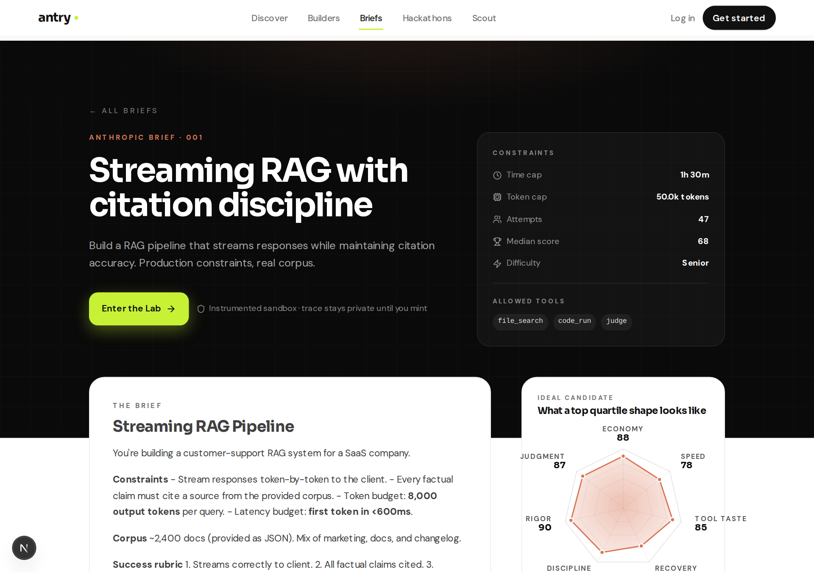
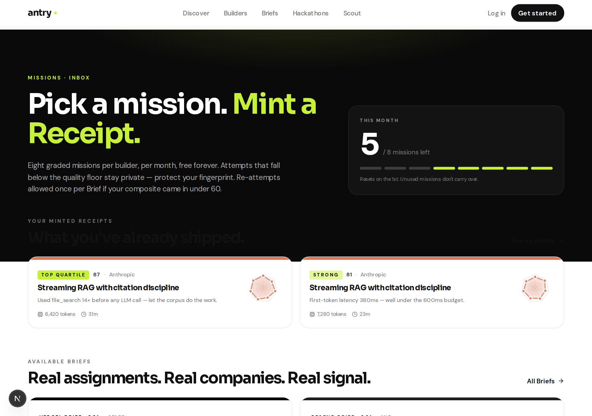
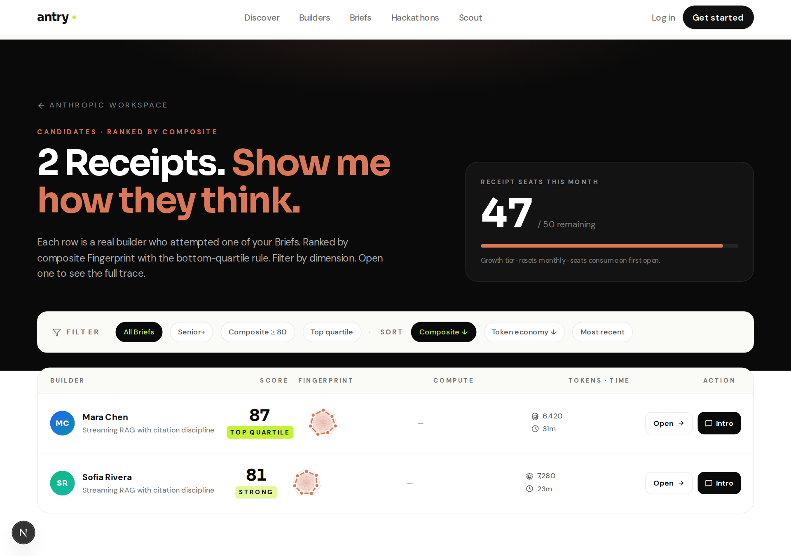
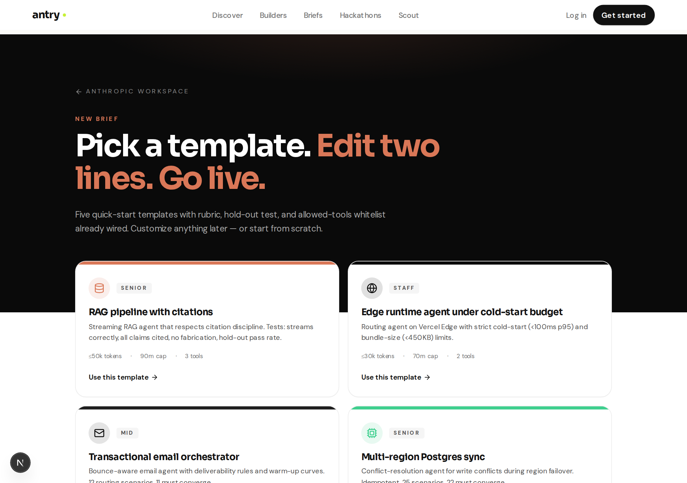
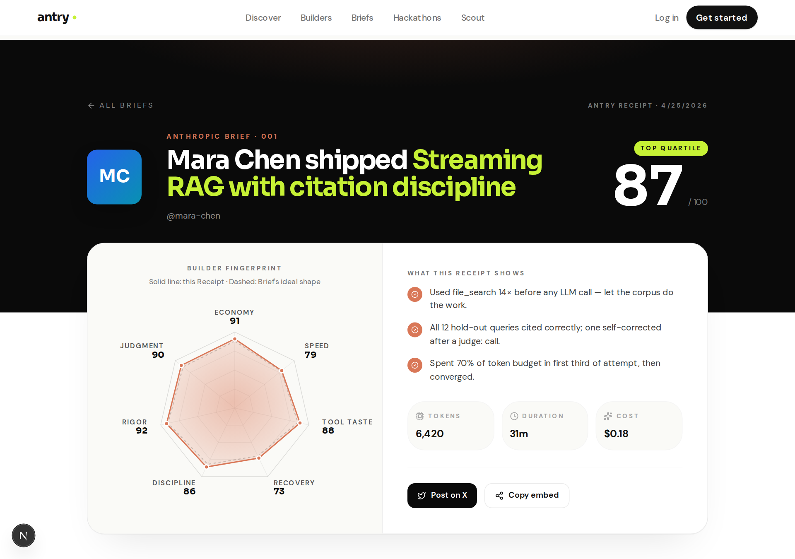
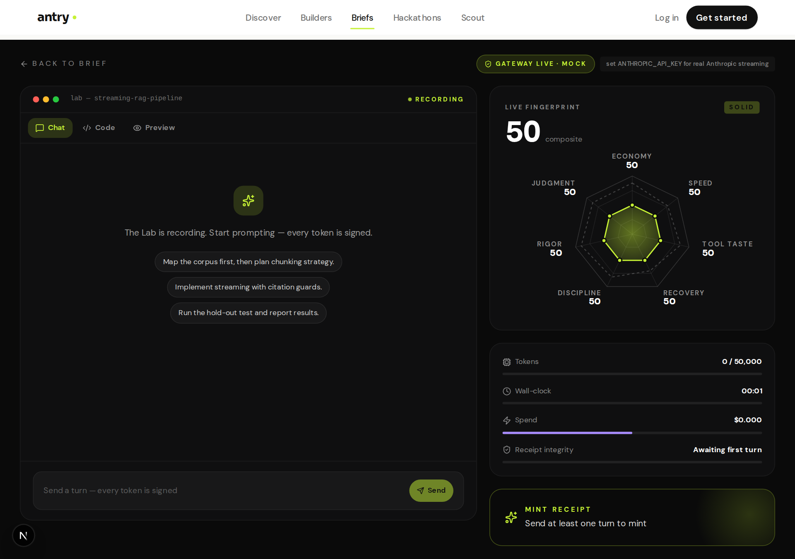
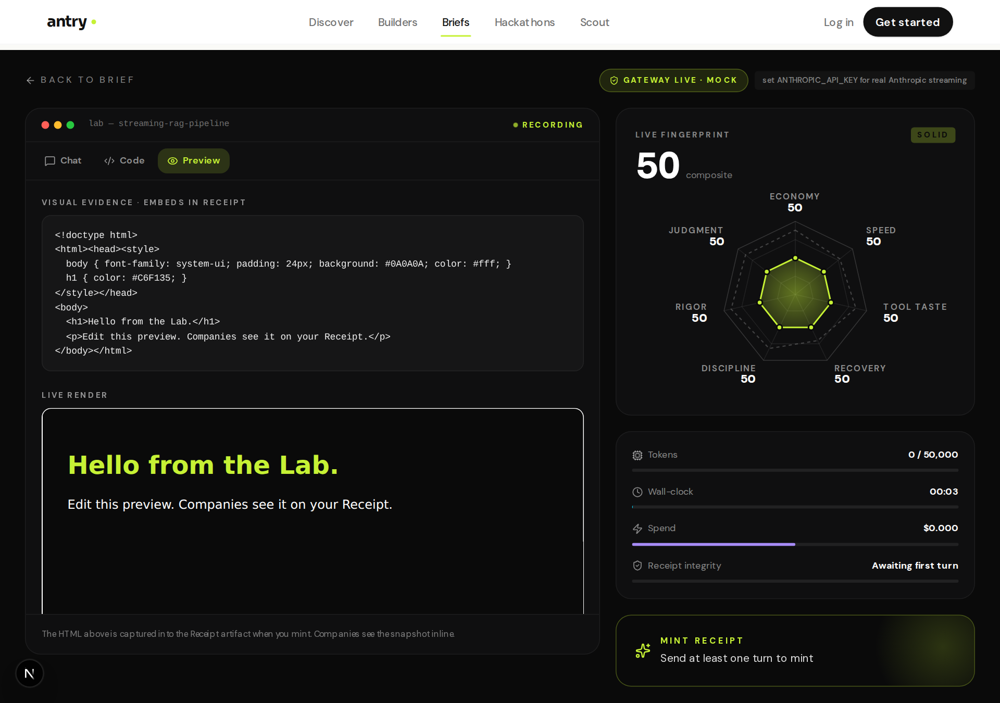
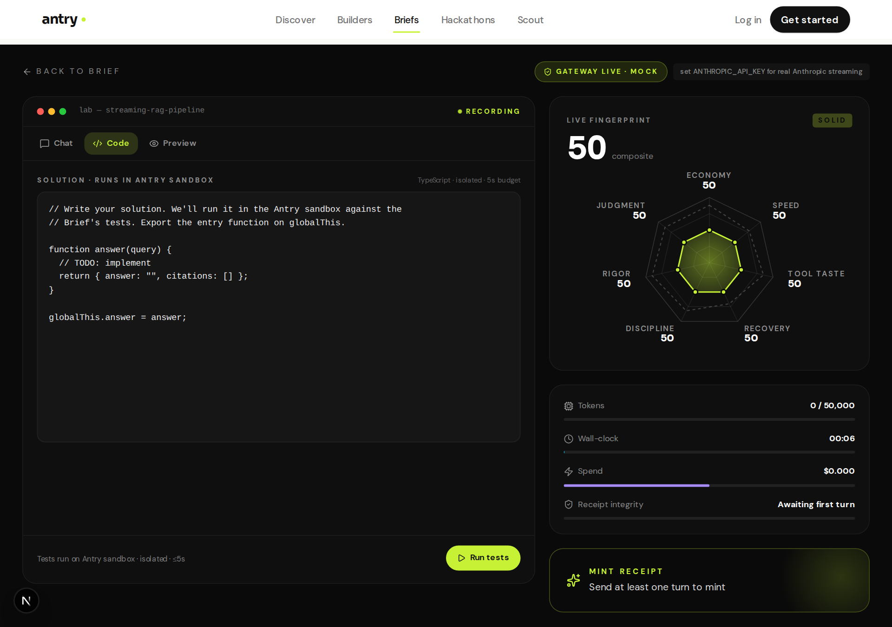
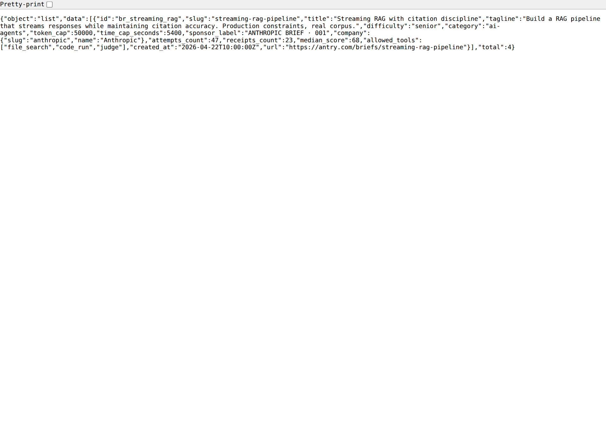
Public launch in six weeks. Foundation first, hero feature second, seeded community third.
Aggressive timeline against Show HN + Product Hunt + X. The full plan lives in ANTRY_ROADMAP.
OG + Twitter cards, dynamic OG images, sitemap, robots, Plausible, Sentry, Resend welcome email, mobile QA, security headers.
Paste a GitHub username, get a draft builder profile in 5 seconds. Pinned repos, tech stack, one-line Scout summary. One-click claim.
20 hand-curated featured builders. Real projects, real demos, real Receipts. Trust signals so day one feels like year one.
One real company, one real brief, one real prize. Live ranked candidates dashboard. Proof the loop closes.
Receipts and profiles become embeddable. JSON API for badge servers. Builders share Antry without Antry having to ask.
The product is the marketing. Every post links to a live build by a real builder, not a static page.
A real product under the hood, not a slide deck.
Built end-to-end across landing, auth, briefs, missions, lab, API, and a candidate dashboard. The discovery library (GitHub scanner, scorer, importer) is the seed of the hero feature.
The original artifacts — kept as-is.
Business plan, platform spec, roadmap and marketing. These were written first; the product followed.